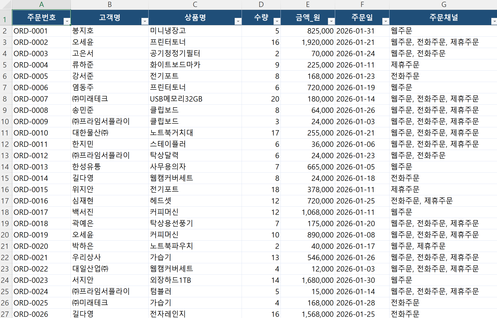

// 실습 1 · 흩어진 주문 한 표로 모으기
1 · 한 표로 모으기¶
세 주문 파일을 표준 7칸(주문번호·고객명·상품명·수량·금액_원·주문일·주문채널)에 맞춰 하나의 엑셀 파일로 합칩니다. 파일마다 열 제목이 달라도 같은 뜻이면 같은 칸으로 옮깁니다.
직접 시켜보세요¶
여러분 문장으로 AI에게 시킵니다. 아래 두 체크리스트를 먼저 읽고, 빠진 규칙이 없도록 프롬프트에 담으세요. 열 이름 대조표는 작업방법참고.xlsx에 있습니다.
프롬프트에 꼭 담을 것 ✅¶
- 읽을 대상 — 세 파일
웹주문·전화주문·제휴주문전부 - 결과 파일 — 하나의 엑셀 파일, 파일명 지정 (예:
주문종합.xlsx) - 엑셀에 들어갈 칸 — 표준 7칸 (주문번호·고객명·상품명·수량·금액_원·주문일·주문채널)
- 열 이름 매핑 — 제목이 달라도 뜻이 같으면 같은 칸 (
order_id·협력사주문ID→ 주문번호) - 출처 표시 — 어느 파일에서 왔는지
주문채널에 (웹/전화/제휴) - 중복 처리 — 같은 주문번호는 한 줄로 합치고, 온 채널은 채널칸에 모두
- 날짜 형식 —
YYYY-MM-DD로 통일 (제휴는01/12/2026처럼 월/일 순서라 주의) - 빈 금액 처리 — 0이 아니라 빈칸 (없는 값 지어내지 않기)
이런 건 빼세요 ❌¶
- 채널별 합계·요약 내기 (이건 모으기지 줄이기가 아닙니다 — 행을 보존)
- 겹친 주문번호를 그냥 두 줄로 두기 (한 줄로 합쳐야 합니다)
- 빈 금액을
0으로 채우기 (0원과금액 모름은 다른 사건) - "알아서 잘 합쳐줘"처럼 칸·규칙 없는 지시
예시 프롬프트¶
여러분 문장을 먼저 보낸 뒤에 열어보세요.
이렇게 시킬 수 있습니다
이 폴더의 웹주문.xlsx, 전화주문.xlsx, 제휴주문.xlsx 세 파일을 읽어서
주문종합.xlsx의 표준 7칸(주문번호·고객명·상품명·수량·금액_원·주문일·주문채널)에 맞춰 합쳐줘.
파일마다 열 제목이 다른데, 작업방법참고.xlsx의 대조표대로 같은 뜻이면 같은 칸으로 옮겨.
각 줄이 어느 파일에서 왔는지 주문채널에 웹/전화/제휴로 적어줘.
같은 주문번호가 여러 파일에 겹치면 한 줄로 합치고, 온 채널을 채널칸에 모두 남겨줘.
주문일은 YYYY-MM-DD로 통일해. 제휴 파일 날짜는 월/일 순서니까 주의해.
금액이 원본에 비어 있으면 0을 넣지 말고 빈칸으로 둬.
다 되면 원본 세 파일 건수 합과, 합친 뒤 줄 수와, 겹쳐서 합쳐진 건수를 숫자로 알려줘.실행 예시¶
이렇게 나오면 됩니다

체크포인트¶
- 결과 엑셀 파일에 표준 7칸이 그대로 있다
- 세 원본 건수 합(150 + 140 + 120 = 410건)을 받아 적었다
- 합친 뒤 줄 수와 겹쳐서 합쳐진 건수를 AI에게 숫자로 받았다
- 아무 줄이나 골라
주문채널이 실제 원본 파일과 맞다